Tradução automática
Este artigo foi traduzido automaticamente a partir da versão original em inglês.
Engenharia de Contexto para Agentes de IA: Janelas de Contexto, Memória, Ferramentas e Guardrails
TL;DR
A engenharia de contexto é o pipeline que decide o que o modelo vê no momento da decisão: instruções, exemplos, conhecimento, memória, skills, ferramentas, guardrails. A maioria dos agentes em produção funciona ou falha nesta camada. Abaixo está o blueprint a que volto repetidamente, com os padrões que realmente uso.
O mesmo agente que brilha numa demo de 30 minutos pode colapsar ao terceiro dia em produção. Quase sempre, a falha não tem nada a ver com o modelo e tudo a ver com o que estava no contexto quando tomou a decisão errada. Uma memória desatualizada. Um documento que já não é relevante. Uma descrição de ferramenta que mudou. Uma instrução vaga.
A engenharia de contexto é o que faz para evitar que isso aconteça: desenhar o que o modelo vê antes de cada decisão, deliberadamente, com um orçamento. Este artigo percorre os padrões que uso.
Porque é que a engenharia de contexto importa para agentes de IA
Um agente de apoio ao cliente corre durante três semanas e trata 200 tickets. Depois começa a alucinar detalhes do produto, a confundir clientes e a chamar as APIs erradas. O modelo não piorou. O contexto sim.
Há quatro coisas que mudaram em 2025 e que tornam isto mais doloroso do que costumava ser. Os agentes deixaram de ser chatbots e começaram a executar ações, o que significa que uma única má decisão de contexto pode propagar-se por um plano de dez passos em vez de produzir apenas uma resposta errada. A memória centralizada e padrões como MCP tornam possível carregar contexto pessoal em segurança, mas só se desenhar corretamente a camada — sem governance, expõe PII ou rebenta a janela. Hybrid retrieval, reranking e graph-aware retrieval também amadureceram, o que reduz alucinações e tokens, desde que encaminhe de facto as queries para a estratégia certa. E a maioria dos pilotos agentic que vejo a bloquear está a bloquear no desenho e governance do contexto, não na qualidade do modelo. Uma camada de contexto deliberada é o que os desbloqueia.
Conceitos-chave para iniciantes
Alguns termos que aparecem ao longo do artigo:
- Janela de contexto: a memória de trabalho do modelo. O texto máximo (em tokens) que consegue considerar numa única decisão. Se exceder esse limite, o modelo falha ou esquece o início.
- Tokens: a unidade em que o texto é dividido. Aproximadamente, 1.000 tokens para 750 palavras.
- Orçamento de atenção: os modelos de linguagem prestam atenção a cada par de tokens, por isso, para n tokens, existem n² relações. À medida que o contexto cresce, esse orçamento fica mais diluído, e os tokens do meio perdem face ao início e ao fim.
- Embeddings: representações numéricas de texto. Permitem pesquisar por significado, pelo que uma query por "dog" pode encontrar "puppy".
- JSON Schema: uma forma standard de descrever a estrutura de dados JSON. É usado para obrigar o modelo a devolver campos específicos, como
{"answer": "...", "citations": [...]}. - MCP (Model Context Protocol): um standard aberto que permite aos modelos de IA comunicar com dados e ferramentas externas através de uma interface comum. Pense nele como uma porta USB para ligar um agente aos seus ficheiros locais, bases de dados ou Slack.
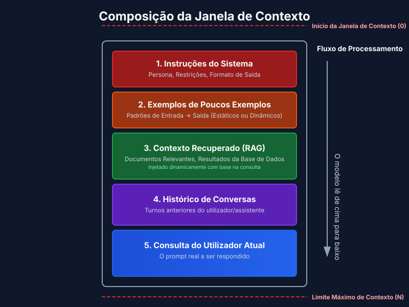
O que é a camada de contexto?
Um pipeline mais uma policy que seleciona e estrutura inputs por passo, aplica controlos (formato, segurança, policy) e fornece ao modelo contexto suficiente, no momento certo.
Pense nisto como a linha de montagem que prepara exatamente aquilo de que o modelo precisa para tomar uma boa decisão.
O contexto é um recurso finito. Os modelos, tal como humanos com memória de trabalho limitada, têm um orçamento de atenção que se esgota à medida que o contexto cresce. Cada novo token consome parte desse orçamento. O problema de engenharia é encontrar o menor conjunto de tokens de alto sinal que permita obter a resposta desejada.
Não existe uma decomposição canónica única — equipas diferentes colocam em produção stacks diferentes. A que uso parece-se com isto:
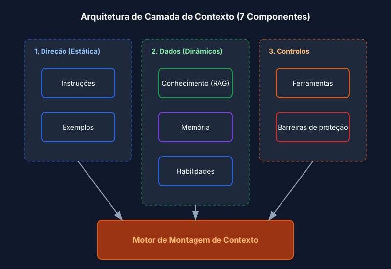
1) Instruções
Um contrato duradouro para o comportamento: papel, tom, restrições, schema de output, objetivos de avaliação. Os modelos modernos respeitam hierarquias de instruções (system > developer > user), por isso use essa hierarquia explicitamente em vez de enfiar tudo num único bloco.
Recorre a instruções quando precisa de output consistente (relatórios, SQL, chamadas API, JSON) ou quando tem de impor policy — redigir PII, recusar pedidos para coisas que não suporta, nunca incluir URLs internas. Os padrões que funcionam na prática são os óbvios: manter blocos de policy separados da tarefa do utilizador, orientar código downstream determinístico com JSON Schemas e separar mensagens system, developer e user para que o modelo saiba de que voz vem cada instrução.
Um exemplo simples de um bloco de policy:
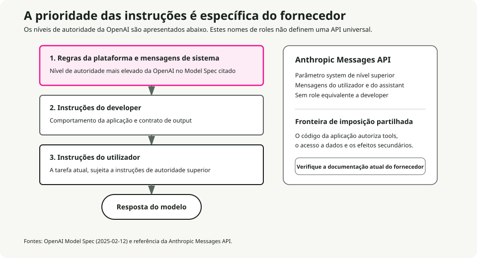
SYSTEM RULES
- Role: support assistant for ACME.
- Always output valid JSON per AnswerSchema.
- If a request needs account data, ask for the account ID.
- Never include secrets or internal URLs.
Schema-guided reasoning (SGR)
O upgrade mais útil a "dar instruções ao modelo" é tornar essas instruções estruturais. Oriente o agente com JSON Schemas para o plano, argumentos da ferramenta, resultados intermédios e resposta final. O modelo emite e consome JSON em cada passo, e o seu código valida-o antes de acontecer qualquer outra coisa. Isto reduz ambiguidade, torna os retries determinísticos e melhora a segurança porque tipos e campos obrigatórios são impostos ao longo de todo o loop.
O fluxo é curto. Defina schemas para Plan, ToolArgs, StepResult e FinalAnswer. Em cada passo, o modelo produz JSON que corresponde a um deles. O seu código valida. Se a validação falhar, tente uma reparação automática (por exemplo, preencher campos obrigatórios em falta com defaults sensatos). Se a reparação falhar, recuse e registe.
Concretamente: em vez de o modelo dizer "Vou procurar os tickets do cliente", produz
{
"action": "call_tool",
"tool": "search_tickets",
"args": { "customer_id": "A-123", "limit": 10 },
"expected_schema": "TicketList"
}
e o seu código valida args face ao schema da ferramenta antes de chamar a API.
2) Exemplos
Alguns pares curtos input-output que mostram o formato exato, tom e passos que o modelo deve seguir. Recorra a exemplos quando precisa de um template específico (tabelas, JSON, SQL, chamadas API) ou quando quer formulação específica do domínio e tom consistente.
Há algumas regras que continuo a reaprender. Mostre a estrutura-alvo exata na demo canónica, não uma paráfrase. Junte bons exemplos a maus exemplos — contrastar um erro típico com o resultado pretendido ensina mais do que dois outputs corretos. Junte o seu JSON Schema a duas ou três demos curtas em vez de uma longa. E mantenha-os curtos: muitas demos pequenas e focadas quase sempre batem um único exemplo enorme.
3) Conhecimento
Grounding do modelo com factos externos: vector e keyword retrieval, reranking, graph queries, web fetches, fontes empresariais. Precisa disto quando o modelo não consegue saber a resposta a partir dos seus weights — factos recentes, factos privados ou qualquer coisa que precise de citação.
A stack de retrieval que vale a pena usar por defeito é hybrid (BM25 mais dense) com um reranker por cima para reduzir a fatura de tokens. Recorra a graph-aware retrieval (GraphRAG) quando a resposta exige atravessar documentos, e a adaptive RAG quando um único tipo de query não serve para todos — às vezes não quer retrieval nenhum, às vezes um único passo, às vezes um loop iterativo.
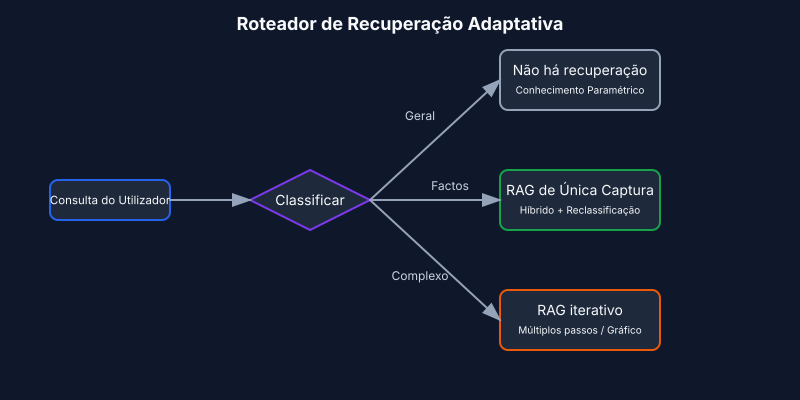
Os parâmetros que realmente mexem na qualidade são menores do que a literatura sugere. Faça chunking por fronteira semântica (parágrafos, secções) em vez de tamanho fixo — o chunking é a única decisão que faz ou desfaz a qualidade do retrieval em documentos reais. Comece com top-k entre 10 e 20 para hybrid, depois rerank para 3 a 5. Use MMR com λ por volta de 0,7 como default para diversidade. E inclua sempre referências às fontes e citações diretas no output, não porque o modelo alucine sem elas, mas porque são isso que torna a resposta auditável.
4) Memória
Contexto duradouro entre turns e sessões. A memória de curto prazo guarda o estado da conversa. A memória de longo prazo guarda factos sobre o utilizador e a aplicação. A memória episódica guarda eventos. A memória semântica guarda entidades. Use memória quando quer personalização e continuidade, ou quando vários agentes coordenam ao longo de dias ou semanas.
Os padrões que sobrevivem ao contacto com produção: memórias de entidades (nomes, IDs, preferências) com policies de expiração explícitas; retrieval com scope a partir de um armazenamento de longo prazo suportado por vectors, pares chave-valor ou um grafo; e ligar a memória à compressão para que, quando a memória de curto prazo cresce muito, seja resumida em vez de truncada. A parte da sumarização é coberta em Estratégias de Compressão de Contexto [7].
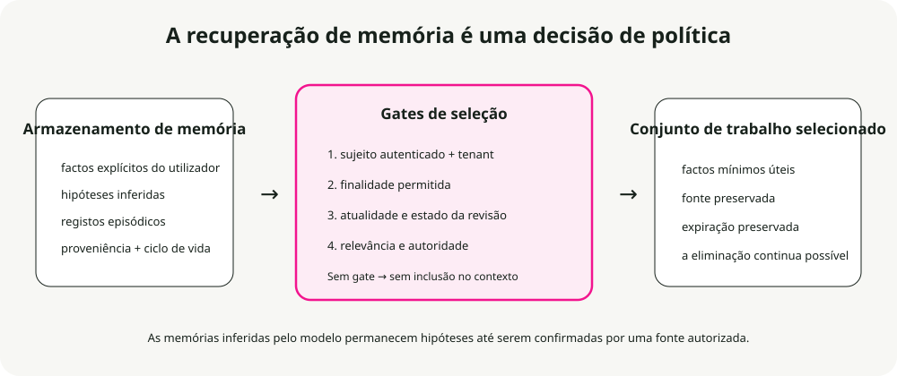
A policy de expiração que uso por defeito:
- Preferências: 365 dias.
- Eventos episódicos: 90 dias.
- Estado de curto prazo: limpar no fim da sessão.
- Entidades: sem expiração, mas com validação periódica obrigatória.
5) Skills
Especialização de domínio composable que os agentes descobrem e carregam on demand. O framework Agent Skills da Anthropic é o desenho de referência para capturar conhecimento procedimental e partilhá-lo entre agentes.
Construir uma skill para um agente é como montar um guia de onboarding para uma nova contratação. — Anthropic Engineering Blog
Quer skills quando precisa de especialização específica de domínio (manipulação de PDF, git, análise de dados), quando quer procedimentos reutilizáveis entre agentes ou organizações, ou quando quer especializar um agente sem hardcode de comportamentos no system prompt.
O que é uma skill?
Uma skill é uma pasta organizada que contém instruções, scripts e recursos que o agente pode descobrir e carregar quando relevante:
- Um ficheiro
SKILL.mdcom um nome, uma descrição (em YAML frontmatter) e as instruções da skill. - Ficheiros adicionais — referências, templates — que a skill pode carregar.
- Código: Python ou outros executáveis que o agente pode correr como ferramentas.
Padrão de skills: divulgação progressiva
O princípio que faz as skills escalarem é a divulgação progressiva: carregar informação apenas quando é necessária. (Veja O princípio da divulgação progressiva abaixo para a versão geral.) No arranque, apenas os nomes e descrições das skills ficam em contexto — o suficiente para o agente saber o que está disponível. O conteúdo completo do SKILL.md só é carregado quando a skill é ativada. Ficheiros referenciados mais profundos só são carregados quando a skill ativada precisa deles.
Isto significa que o conteúdo das skills é efetivamente ilimitado. O agente não paga contexto pelo que não usa.
┌─────────────────────────────────────────────────────────┐
│ Context Window │
├─────────────────────────────────────────────────────────┤
│ System Prompt │
│ ├── Core instructions │
│ └── Skill metadata (name + description only) │
│ • pdf: "Manipulate PDF documents" │
│ • git: "Advanced git operations" │
│ • context-compression: "Manage long sessions" │
├─────────────────────────────────────────────────────────┤
│ [User triggers task requiring PDF skill] │
│ │
│ → Agent reads pdf/SKILL.md into context │
│ → Agent reads pdf/forms.md (only if filling forms) │
│ → Agent executes pdf/extract_fields.py (without loading)│
└─────────────────────────────────────────────────────────┘
Boas práticas para skills
As guidelines da Anthropic resumem-se a quatro pontos. Comece pela avaliação: execute o agente em tarefas representativas, encontre as lacunas e escreva skills para as fechar. Estruture para escalar: divida um SKILL.md grande em ficheiros separados e mantenha caminhos separados quando os contextos são mutuamente exclusivos. Observe como o agente usa as suas skills e itere nos nomes e descrições até a precisão de ativação ser elevada. E deixe o agente ajudar: peça ao Claude para capturar abordagens bem-sucedidas em conteúdo de skill reutilizável.
Considerações de segurança
As skills introduzem vulnerabilidades por definição — dão ao agente novas capacidades através de instruções e código. Instale apenas a partir de fontes em que confia. Audite antes de usar, incluindo ficheiros incluídos, dependências de código e quaisquer ligações de rede. Preste atenção especial a instruções que ligam a skill a serviços externos, porque é aí que a exfiltração normalmente começa.
6) Ferramentas
Chamadas de função que obtêm dados ou executam ações: APIs, bases de dados, pesquisa, operações sobre ficheiros, computer use. Quer ferramentas quando precisa de efeitos laterais determinísticos e fidelidade de dados, ou quando orquestra loops plan-call-verify-continue.
Os padrões que uso por defeito são planeamento tool-first com validadores pós-chamada, outputs estruturados entre passos e fallbacks explícitos quando as ferramentas falham (retry, depois degrade, depois human-in-loop).
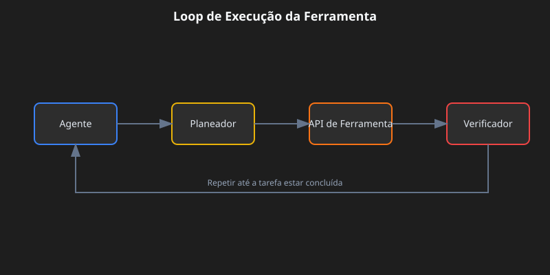
Há três conceitos em que vale a pena ser preciso. Idempotent significa seguro para repetir sem efeitos laterais (GET sim, POST ou DELETE não). Postconditions são as verificações que executa após cada chamada: resultado não vazio, status igual a "ok", JSON válido. A fallback chain é a ordem que segue quando algo corre mal: retry, depois degrade com elegância, depois escalar para um humano.
Uma nota sobre MCP
O MCP está a tornar-se o standard para a forma como os agentes se ligam a ferramentas e dados [6]. Em vez de escrever um wrapper de API custom para cada serviço, corre um servidor MCP para cada um deles e o agente descobre automaticamente as ferramentas e recursos disponíveis.
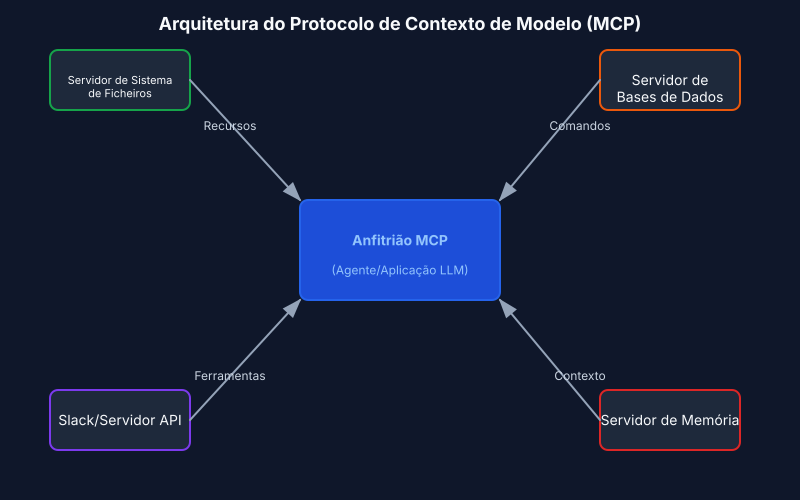
7) Guardrails
Validação de input e output, filtros de segurança, defesa contra jailbreak, imposição de schema, policy de conteúdo. Quer guardrails quando precisa de compliance ou integridade de marca, e quando quer outputs tipados e corretos e comportamento seguro.
A forma que se aguenta em produção: rails programáveis (regras de policy mais ações), validadores de schema e semânticos (tipos, regex, evals) e policy central com observability (dashboards, red-teaming).
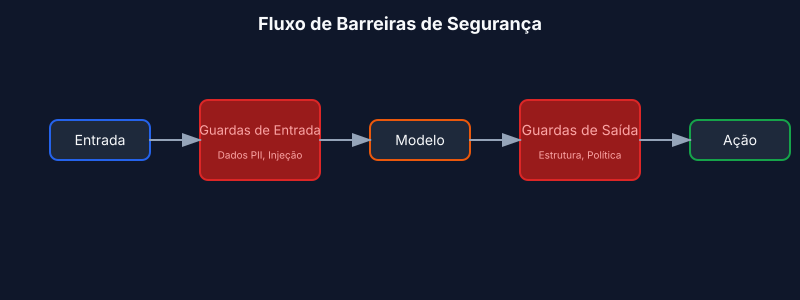
A decisão reparar-versus-recusar é aquela em que as equipas falham. Violações de schema têm direito a uma tentativa automática de reparação; se falhar, recusa com um erro claro. Violações de policy saltam totalmente a tentativa de reparação — recuse de imediato e sugira uma alternativa segura.
Quatro tipos comuns de guardrail cobrem a maioria das necessidades em produção. Guardas de input apanham PII, prompt injection e toxicidade antes de o modelo os ver. Guardas de output impõem schema, policy de conteúdo e consistência factual. Guardas de ferramentas tratam rate limiting, verificações de permissões e limiares de custo. Guardas de memória redigem PII antes do armazenamento e impõem expiração.
Exemplo concreto: um bot de suporte a responder a um ticket
Eis o que a camada de contexto monta quando um cliente pergunta "Porque é que a minha API key não está a funcionar?":
- Instruções: o papel é assistente de suporte útil para a ACME, citar fontes, devolver JSON
{answer, sources, next_steps}. - Exemplos: dois pares curtos Q→A a mostrar o tom e a forma do JSON, um sobre API keys, outro sobre faturação.
- Conhecimento: pesquisar no help center e nos runbooks do produto por "API key troubleshooting"; incluir citações relevantes.
- Memória: nome do cliente "Sam", ID de conta "A-123", plano "Pro", última interação "API key criada há 3 dias".
- Skills: carregar a skill
ticket-handlingcom procedimentos de troubleshooting, policies de escalamento e templates de resolução. - Ferramentas:
search_tickets(customer_id),check_api_key_status(key),create_issue(description). - Guardrails: redigir valores de API key no output; se o schema falhar, reparar uma vez; se houver violação de policy (um pedido para apagar dados de produção, por exemplo), recusar educadamente.
O modelo recebe todo este contexto estruturado, gera uma resposta, e os guardrails validam-na antes de ela voltar para o cliente.
Fundamentos de contexto em profundidade
Antes de os padrões fazerem sentido, a anatomia tem de o fazer.
A anatomia do contexto
O contexto tem vários componentes distintos, cada um com características e restrições diferentes.
System prompts estabelecem a identidade do agente, restrições e guidelines de comportamento. Carregam uma vez no início da sessão e persistem durante a conversa. O truque é encontrar a altitude certa: suficientemente específicos para orientar realmente o comportamento, mas suficientemente flexíveis para deixar espaço a julgamento. Se descer demasiado, coloca em produção regras frágeis e hardcoded. Se subir demasiado, o modelo não tem sinal concreto para agir.
Organize prompts em secções distintas usando tags XML ou cabeçalhos Markdown:
<BACKGROUND_INFORMATION>
You are a Python expert helping a development team.
Current project: Data processing pipeline in Python 3.9+
</BACKGROUND_INFORMATION>
<INSTRUCTIONS>
- Write clean, idiomatic Python code
- Include type hints for function signatures
- Add docstrings for public functions
</INSTRUCTIONS>
<TOOL_GUIDANCE>
Use bash for shell operations, python for code tasks.
File operations should use pathlib for cross-platform compatibility.
</TOOL_GUIDANCE>
Definições de ferramentas especificam as ações que o agente pode executar. Cada ferramenta tem um nome, descrição, parâmetros e formato de retorno. São as descrições que realmente orientam o comportamento. Descrições fracas obrigam o agente a adivinhar; boas descrições incluem contexto de uso, exemplos e defaults sensatos. O princípio da consolidação: se um engenheiro humano não consegue dizer de forma definitiva a que ferramenta deve recorrer, um agente não fará melhor. Esse é o sinal para as fundir ou renomear.
Documentos recuperados trazem conteúdo relevante para o contexto em runtime em vez de pré-carregar tudo. A abordagem just-in-time mantém por perto identificadores leves — caminhos de ficheiro, queries armazenadas, links web — e carrega os dados reais apenas quando necessário.
Histórico de mensagens é a conversa entre utilizador e agente, incluindo queries anteriores, respostas e raciocínio. Em tarefas longas, pode crescer até dominar a janela. Também funciona como memória de scratchpad, onde os agentes acompanham progresso e estado da tarefa.
Outputs de ferramentas são os resultados das ações do agente: conteúdos de ficheiros, resultados de pesquisa, output de comandos, respostas de API. Em trajetórias típicas de agentes, as observações acabam por consumir mais de 80% do contexto total [4]. Esse número é a pressão por detrás de técnicas como observation masking e compaction.
Janelas de contexto e mecânica de atenção
Os modelos de linguagem calculam atenção como relações pairwise entre cada par de tokens. Para n tokens, isso significa n² relações. À medida que o contexto cresce, a capacidade do modelo para capturar essas relações fica mais diluída.
Os modelos também aprendem os seus padrões de atenção a partir dos dados de treino, e esses dados são dominados por sequências mais curtas. Por isso, o modelo tem comparativamente pouca experiência com dependências ao longo de todo o contexto. O resultado final é um orçamento de atenção que se esgota à medida que o contexto cresce.
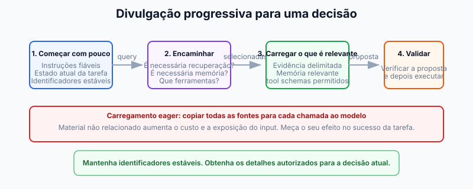
O princípio da divulgação progressiva
A divulgação progressiva gere o contexto de forma eficiente ao carregar informação apenas quando necessário. No arranque, os agentes carregam apenas nomes e descrições de skills — o suficiente para saber quando uma skill pode ser relevante. O conteúdo completo só é carregado quando é ativado para tarefas específicas.
# Instead of loading all documentation at once:
# Step 1: Load summary
docs/api_summary.md # Lightweight overview
# Step 2: Load specific section as needed
docs/api/endpoints.md # Only when API calls needed
docs/api/authentication.md # Only when auth context needed
Qualidade do contexto versus quantidade
A suposição de que janelas de contexto maiores resolvem problemas de memória foi empiricamente desmontada. Engenharia de contexto significa encontrar o menor conjunto possível de tokens de alto sinal.
Várias forças empurram para a eficiência. O custo de processamento cresce desproporcionalmente com o comprimento do contexto — não é o dobro para o dobro dos tokens, é exponencialmente mais em tempo e computação. O desempenho do modelo degrada-se para além de certos comprimentos de contexto, mesmo quando a janela tecnicamente suporta mais. E inputs longos continuam caros mesmo com prefix caching.
O princípio orientador é informatividade acima de exaustividade. Inclua o que importa para a decisão em causa, exclua o que não importa.
Padrões de degradação do contexto
Os modelos de linguagem exibem padrões de degradação previsíveis à medida que o contexto cresce. Conhecê-los é o que permite diagnosticar falhas e desenhar sistemas resilientes.
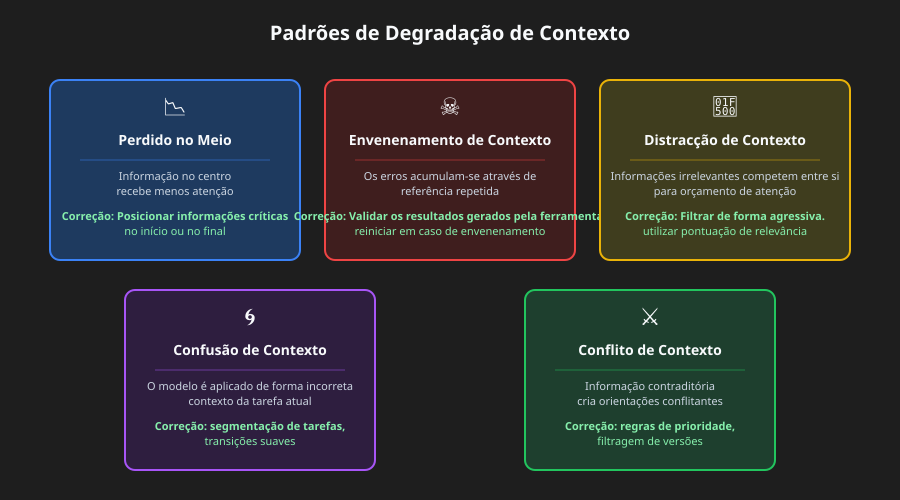
O fenómeno lost-in-middle
O padrão de degradação mais bem documentado é o "lost-in-middle", em que os modelos mostram curvas de atenção em U [1]. A informação no início e no fim do contexto recebe atenção fiável; a informação no meio sofre uma precisão de recall 10-40% inferior.
O mecanismo é concreto. Os modelos alocam atenção massiva ao primeiro token (muitas vezes o token BOS) para estabilizar estados internos, criando um "attention sink" que consome orçamento de atenção [2]. À medida que o contexto cresce, os tokens do meio não conseguem ganhar peso de atenção suficiente.
A correção prática é colocar informação crítica no início ou no fim do contexto. Use estruturas de resumo que coloquem informação-chave em posições favorecidas pela atenção.
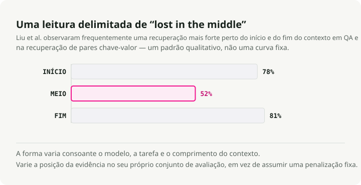
# Organize context with critical info at edges
[CURRENT TASK] # At start
- Goal: Generate quarterly report
- Deadline: End of week
[DETAILED CONTEXT] # Middle (less attention)
- 50 pages of data
- Multiple analysis sections
- Supporting evidence
[KEY FINDINGS] # At end
- Revenue up 15%
- Costs down 8%
- Growth in Region A
Para instruções que não pode mesmo perder, duplique-as no início e no fim. Como os modelos prestam forte atenção a ambas as extremidades, a mesma instrução em ambas as posições recebe atenção independentemente do comprimento do contexto. Este é o movimento certo para restrições de sistema que têm de ser sempre seguidas, requisitos de formato de output e policies de segurança.
# Example: Duplicating critical instructions
[SYSTEM - START]
CRITICAL: Always respond in JSON format. Never include PII.
[... long context with documents, history, tools ...]
[SYSTEM - REMINDER]
CRITICAL: Always respond in JSON format. Never include PII.
Envenenamento de contexto
Envenenamento de contexto é o que acontece quando alucinações, erros ou informação incorreta entram no contexto e se acumulam através de referências repetidas. Depois de envenenado, o contexto cria loops de feedback que reforçam a crença errada.
Normalmente entra por uma de três portas: outputs de ferramentas com erros ou formatos inesperados, documentos recuperados com informação incorreta ou desatualizada, e resumos gerados pelo modelo que introduzem alucinações e depois persistem.
Dá por isso através de sintomas: degradação da qualidade de output em tarefas que antes tinham sucesso, agentes a chamar as ferramentas erradas ou parâmetros errados, e alucinações persistentes que sobrevivem a tentativas de correção.
A recuperação é mecânica. Truncar o contexto para antes do ponto de envenenamento, assinalar explicitamente o envenenamento e pedir reavaliação, ou reiniciar com contexto limpo preservando apenas informação verificada.
Distração de contexto
A distração de contexto emerge quando o contexto fica tão longo que o modelo se foca excessivamente no que lhe foi fornecido em detrimento do que aprendeu no treino. A investigação mostra que até um único documento irrelevante reduz o desempenho em tarefas com documentos relevantes [8]. O efeito segue uma função degrau — a presença de qualquer distractor desencadeia degradação.
A ideia-chave: os modelos não conseguem ignorar contexto irrelevante. Têm de prestar atenção a tudo o que lhes é dado, e essa atenção é em si a distração, mesmo quando a informação irrelevante é claramente inútil.
A mitigação é filtrar relevância antes de carregar documentos, usar namespacing para tornar secções irrelevantes fáceis de ignorar, e perguntar se a informação precisa mesmo de estar no contexto ou se pode ser acedida através de uma chamada de ferramenta.
Confusão de contexto
Confusão de contexto é o que acontece quando informação irrelevante influencia respostas de formas que degradam a qualidade. Se colocar algo no contexto, o modelo tem de lhe prestar atenção, e isso significa que pode incorporar informação irrelevante, usar definições de ferramentas destinadas a outra tarefa ou aplicar restrições de outro contexto.
Sinais a observar: respostas que tratam o aspeto errado da query, chamadas de ferramentas que parecem certas para uma tarefa diferente, outputs que misturam requisitos de várias fontes.
A correção é segmentação explícita de tarefas (tarefas diferentes recebem janelas de contexto diferentes), transições claras entre contextos e gestão de estado que isola o contexto.
Choque de contexto
Choque de contexto desenvolve-se quando a informação acumulada entra diretamente em conflito, criando orientação contraditória. Isto é diferente de envenenamento, onde uma peça está errada — no choque, várias peças corretas contradizem-se.
As fontes comuns incluem retrieval multi-fonte com informação contraditória, conflitos de versão (informação desatualizada e atual ao mesmo tempo no contexto) e conflitos de perspetiva (pontos de vista válidos mas incompatíveis).
Resolve-se através de marcação explícita de conflito, regras de prioridade que estabelecem que fonte prevalece e filtragem por versão que exclui informação desatualizada.
Limiares de degradação específicos por modelo
A investigação dá dados concretos sobre quando a degradação começa. O comprimento efetivo de contexto — onde os modelos mantêm desempenho ótimo — é muitas vezes significativamente menor do que o máximo anunciado [3]:
| Modelo | Contexto Máx. | Contexto Efetivo | Notas de Degradação |
|---|---|---|---|
| GPT-4 Turbo | 128K tokens | ~32K tokens | Retrieval degrada após 32K, precisão sofre para lá de 64K |
| GPT-4o | 128K tokens | ~8K tokens | Precisão complexa em NIAH cai de 99% para 70% aos 32K |
| Claude 3.5 Sonnet | 200K tokens | ~4K tokens | Precisão complexa em NIAH cai de 88% para 30% aos 32K |
| Gemini 1.5 Pro | 1M tokens | ~128K tokens | 99% de recall NIAH em 1M, melhor desempenho em contexto longo |
| Gemini 2.0 Flash | 1M tokens | ~32K tokens | Precisão complexa em NIAH cai de 94% para 48% aos 32K |
Fontes: benchmark RULER [3], benchmark NoLiMa [9], relatórios técnicos da Google.
A principal conclusão do RULER [3]: apenas 50% dos modelos que afirmam ter contexto 32K+ mantêm desempenho satisfatório aos 32K tokens. Pontuações quase perfeitas em testes simples de needle-in-a-haystack não se traduzem em compreensão real de contexto longo — tarefas de raciocínio complexo mostram degradação muito mais acentuada.
Estratégias de compressão de contexto
Nota de terminologia: compressão de contexto é um termo-chapéu que inclui sumarização (para histórico de conversa e memória), observation masking (para outputs de ferramentas) e selective trimming [5]. A sumarização de memória mencionada na secção Memória é uma aplicação destas estratégias de compressão mais amplas.
Quando as sessões de agentes geram milhões de tokens de histórico de conversa, a compressão deixa de ser opcional. A abordagem ingénua é compressão agressiva para minimizar tokens por pedido. O alvo de otimização correto é tokens por tarefa [4]: total de tokens consumidos para completar a tarefa, incluindo custos de re-fetch quando a compressão perde algo crítico.
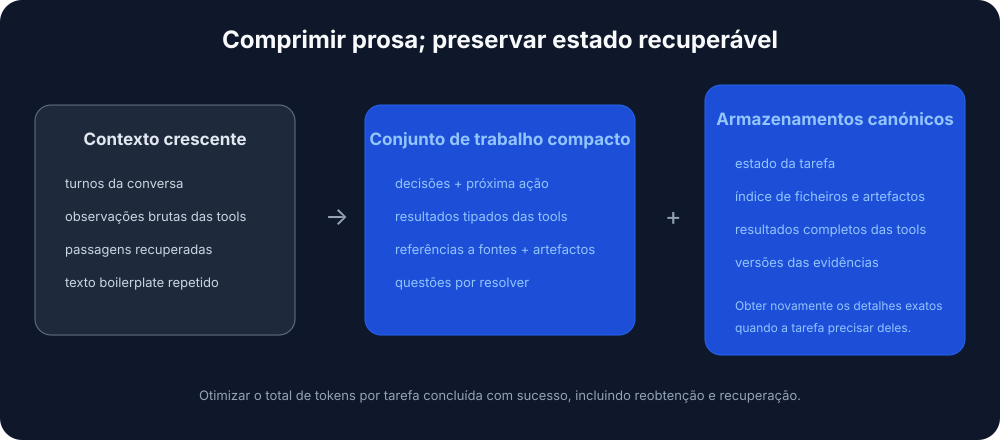
Quando a compressão é necessária
Ative a compressão quando as sessões do agente excedem os limites da janela de contexto, quando os agentes começam a "esquecer-se" dos ficheiros que modificaram, quando está a fazer debug a uma longa sessão de coding que já se prolonga há horas, ou quando o desempenho degrada visivelmente em conversas extensas.
Três abordagens prontas para produção
Anchored iterative summarization mantém um resumo persistente estruturado com secções explícitas para intenção da sessão, modificações de ficheiros, decisões e próximos passos. Quando a compressão é acionada, resume apenas o novo segmento truncado e funde-o no resumo existente. A razão por que funciona é que a estrutura força preservação: secções dedicadas funcionam como checklist que o sumarizador tem de preencher, o que evita drift silencioso.
## Session Intent
Debug 401 Unauthorized error on /api/auth/login despite valid credentials.
## Root Cause
Stale Redis connection in session store. JWT generated correctly but session could not be persisted.
## Files Modified
- auth.controller.ts: No changes (read only)
- config/redis.ts: Fixed connection pooling configuration
- services/session.service.ts: Added retry logic for transient failures
- tests/auth.test.ts: Updated mock setup
## Test Status
14 passing, 2 failing (mock setup issues)
## Next Steps
1. Fix remaining test failures (mock session service)
2. Run full test suite
3. Deploy to staging
Opaque compression produz representações comprimidas otimizadas para fidelidade de reconstrução. Atinge os rácios de compressão mais altos (99%+) mas sacrifica interpretabilidade. Use-a quando a poupança máxima de tokens importa e o re-fetch é barato.
Regenerative full summary gera um resumo estruturado detalhado em cada compressão. O output é legível, mas os detalhes podem degradar-se ao longo de ciclos repetidos de compressão.
Comparação de compressão
Investigação da Factory.ai [4] comparou estratégias de compressão em sessões reais de agentes em produção:
| Método | Rácio de Compressão | Pontuação de Qualidade | Melhor Para |
|---|---|---|---|
| Anchored Iterative | 98.6% | 3.70/5 | Sessões longas, tracking de ficheiros |
| Regenerative | 98.7% | 3.44/5 | Limites de fase claros |
| Opaque | 99.3% | 3.35/5 | Poupança máxima, sessões curtas |
Como ler as métricas:
- Rácio de compressão (98,6%): percentagem de tokens removidos. Um rácio de 98,6% significa que, de 100.000 tokens de histórico, apenas 1.400 permanecem.
- Pontuação de qualidade (3,70/5): medida via avaliação baseada em probes — após a compressão, o agente recebe perguntas que exigem recordar detalhes específicos do histórico truncado (que ficheiros modificámos, qual era a mensagem de erro). 3,70/5 significa que o agente respondeu corretamente a cerca de 74% dos probes.
- 0,7% de tokens adicionais: comparando anchored iterative (98,6%) com opaque (99,3%), a diferença é 0,7%. Numa sessão de 100K tokens, isso são 1.400 tokens contra 700. Os 700 tokens extra (0,7% do original) compram 0,35 pontos de qualidade (3,70 vs 3,35) — recall significativamente melhor de detalhes críticos para a tarefa.
O problema do rasto de artefactos
A integridade do rasto de artefactos é a dimensão mais fraca em todos os métodos de compressão, com pontuações entre 2,2 e 2,5 em 5,0. Agentes de coding precisam de saber que ficheiros criaram, modificaram ou leram, e a compressão muitas vezes perde isso.
Recomendação: implementar um índice de artefactos separado ou tracking explícito do estado de ficheiros no scaffolding do agente, por cima da sumarização geral.
Estratégias de acionamento da compressão
| Estratégia | Ponto de Acionamento | Trade-off |
|---|---|---|
| Limiar fixo | 70-80% de utilização | Simples, mas pode comprimir cedo |
| Sliding window | Manter os últimos N turns + resumo | Tamanho de contexto previsível |
| Baseada em importância | Comprimir primeiro o de baixa relevância | Complexa, mas preserva sinal |
| Limite de tarefa | Comprimir ao concluir tarefas | Resumos limpos, timing imprevisível |
Avaliação baseada em probes
Métricas tradicionais como ROUGE não conseguem captar a qualidade funcional da compressão. Um resumo pode pontuar alto em sobreposição lexical enquanto perde o único caminho de ficheiro de que o agente realmente precisa.
A avaliação baseada em probes mede a qualidade diretamente ao fazer perguntas após a compressão:
| Tipo de Probe | O Que Testa | Exemplo de Pergunta |
|---|---|---|
| Recall | Retenção factual | "Qual era a mensagem de erro original?" |
| Artefacto | Tracking de ficheiros | "Que ficheiros modificámos?" |
| Continuação | Planeamento da tarefa | "O que devemos fazer a seguir?" |
| Decisão | Cadeia de raciocínio | "O que decidimos sobre o problema do Redis?" |
Se a compressão preservou a informação certa, o agente responde corretamente. Se não, adivinha ou alucina.
Técnicas de otimização de contexto
A otimização de contexto estende a capacidade efetiva através de compressão, masking, caching e partitioning. Estas técnicas assentam nas Estratégias de compressão de contexto acima, aplicando-as de forma sistemática para produção. Bem feita, a otimização pode duplicar ou triplicar a capacidade efetiva de contexto sem exigir um modelo maior.
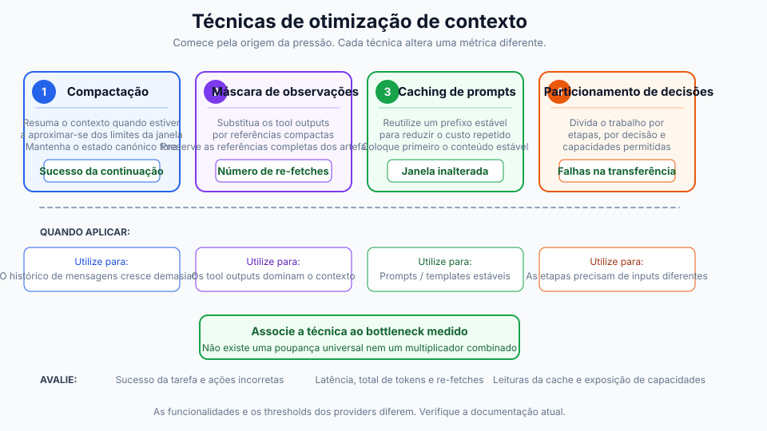
Estratégias de compaction
Compaction resume os conteúdos do contexto ao aproximar-se dos limites e depois reinicializa com o resumo. O objetivo é destilar o conteúdo com alta fidelidade, para que o agente possa continuar a operar com degradação mínima.
A ordem de prioridade que sigo: comprimir primeiro outputs de ferramentas (substituir por resumos), depois turns antigos (resumir conversa inicial), depois documentos recuperados (resumir se existirem versões recentes). Nunca comprima o system prompt.
O que preservar depende do tipo. Outputs de ferramentas: manter descobertas, métricas, conclusões; deitar fora output bruto verboso. Turns conversacionais: manter decisões, compromissos e mudanças de contexto; deitar fora enchimento. Documentos recuperados: manter factos e claims-chave; deitar fora elaboração de suporte.
Observation masking
Os outputs de ferramentas podem representar mais de 80% do uso de tokens [4]. Depois de um agente usar um output de ferramenta para tomar uma decisão, manter o output completo tem valor decrescente.
Uma matriz de decisão para masking:
| Categoria | Ação | Raciocínio |
|---|---|---|
| Observações da tarefa atual | Nunca mascarar | Críticas para o trabalho atual |
| Turn mais recente | Nunca mascarar | Imediatamente relevante |
| Raciocínio ativo | Nunca mascarar | Pensamento em curso |
| Há 3+ turns atrás | Considerar masking | O propósito provavelmente já foi cumprido |
| Outputs repetidos | Mascarar sempre | Redundante |
| Boilerplate | Mascarar sempre | Baixo sinal |
Otimização de KV-cache
A KV-cache armazena tensores Key e Value calculados durante a inferência. Fazer caching entre pedidos com prefixos idênticos evita recomputação, o que reduz drasticamente custo e latência.
Otimize para caching colocando primeiro conteúdo estável:
# Stable content first (cacheable)
context = [system_prompt, tool_definitions]
# Frequently reused elements
context += [reused_templates]
# Unique elements last
context += [unique_content]
Desenhe para estabilidade da cache: evite conteúdo dinâmico como timestamps em prompts, use formatação consistente e mantenha a estrutura estável entre sessões.
Partitioning de contexto
A otimização mais agressiva é repartir o trabalho por subagentes com contextos isolados. Cada subagente opera num contexto limpo focado na sua subtarefa, sem transportar contexto acumulado de outras subtarefas.
Para agregação: valide que todas as partitions terminaram, funda resultados compatíveis e resuma se o output combinado continuar demasiado grande.
Framework de decisão para otimização
Quando otimizar: a utilização de contexto ultrapassa 70%, a qualidade das respostas degrada-se em conversas extensas, os custos sobem devido a contextos longos ou a latência cresce com o comprimento da conversa.
O que aplicar depende do que domina. Se dominam outputs de ferramentas, use observation masking. Se dominam documentos recuperados, use sumarização ou partitioning. Se domina o histórico de mensagens, use compaction com sumarização. Se dominam múltiplos componentes, combine estratégias.
Métricas-alvo razoáveis: compaction com redução de tokens de 50-70% com menos de 5% de degradação de qualidade; masking com redução de 60-80% nas observações mascaradas; otimização de cache com taxa de hit de 70%+ para workloads estáveis.
Como cozinhar isto (passo a passo)
Uma receita prática para a camada de contexto. Comece simples e só adicione complexidade quando algo falhar.
Passo 1: escrever o contrato
Defina o que o seu agente tem de fazer e como se deve comportar. Escreva as policies de nível system (papel, restrições, regras de segurança) e as guidelines de nível developer (formato de output, tom, requisitos de citação). Defina JSON Schemas para cada forma de output: AnswerSchema, PlanSchema, StepResultSchema.
Passo 2: escolher uma estratégia de retrieval
Comece com hybrid retrieval (BM25 mais vector) e um reranker. Depois faça routing por tipo de query. Conhecimento geral não precisa de retrieval. Factos recentes ou privados precisam de single-shot RAG (hybrid mais rerank). Queries complexas e multi-parte precisam de iterative RAG (dividir em subqueries).
Passo 3: desenhar a memória
Separe curto prazo (estado da conversa) de longo prazo (factos do utilizador, histórico). O curto prazo guarda o estado da conversa e os últimos turns, e depois limpa no fim da sessão. O longo prazo guarda entidades do utilizador, preferências e eventos episódicos. Defina regras de expiração: preferências 365 dias, episódico 90 dias, curto prazo apenas na sessão. Adicione redação de PII antes de armazenar qualquer coisa.
Passo 4: especificar ferramentas
Defina assinaturas de ferramentas claras com validação e estratégias de fallback. Para cada ferramenta, escreva um docstring claro, um schema de input e um schema de output. Marque se é idempotent. Defina postconditions e a fallback chain. Valide os argumentos da ferramenta face ao schema antes de chamar.
Passo 5: instalar guardrails
Adicione validação de input e output, filtros de segurança e imposição de policy. A checklist mínima:
- [ ] Redigir PII (emails, SSNs, cartões de crédito) antes do processamento.
- [ ] Validar todos os outputs face ao JSON Schema.
- [ ] Bloquear tentativas de prompt injection.
- [ ] Aplicar rate limit às chamadas de ferramentas.
- [ ] Registar todas as violações de policy para auditoria.
Passo 6: adicionar observability e evals
Instrumente a camada de contexto para a poder depurar. Trace que fontes de contexto foram carregadas; contagens de tokens (input, output, custo); métricas de retrieval (query, top-k, fontes citadas); chamadas de ferramentas (que ferramentas, argumentos, resultados, falhas); e triggers de guardrail (bloqueios de input, reparações de output, recusas por policy).
As métricas que mais importam são exactness (validade do schema, alvo 99%+), groundedness (taxa de citação, alvo 90%+ para queries de conhecimento), latência (alvo abaixo de 2s p95) e custo (alvo abaixo de $0.05 por query).
Passo 7: iterar
Adicione padrões avançados apenas quando atingir limites claros. Adicione reflexões quando a taxa de erro ultrapassar 5%. Adicione planners quando as tarefas exigirem rotineiramente mais de três passos sequenciais. Adicione subagentes quando tiver domínios distintos que precisem de contextos isolados.
Anti-padrões
Erros comuns que matam sistemas agentic. Evite estes.
1. Stuff-the-window
Despejar todos os documentos, memórias e exemplos possíveis no contexto em cada query. O resultado é context rot — a relação sinal-ruído colapsa, e acerta em cheio em todos os padrões de degradação ao mesmo tempo. Veja Padrões de degradação do contexto para os detalhes sobre distração e confusão. A correção é fazer routing adaptativo e aplicar compressão e masking. Veja Técnicas de otimização de contexto.
2. Resultados de ferramentas não validados
O agente chama uma ferramenta, recebe dados de volta e alimenta imediatamente o modelo com eles sem verificar. Dados malformados rebentam a lógica downstream. Resultados nulos causam alucinações. Este é um dos vetores principais de Envenenamento de contexto. Valide sempre os resultados das ferramentas face ao schema e às postconditions.
3. Tudo one-shot
Policy de system, guidelines de developer, exemplos, query do utilizador, memória e conhecimento tudo enfiado num único prompt monolítico. Sem separação de responsabilidades. A janela de contexto enche-se de boilerplate duplicado. Separe instruções duradouras de contexto específico do passo e use os padrões de Otimização de KV-cache acima.
4. Memória sem limites
Guardar para sempre todas as interações do utilizador e carregar tudo em cada query. O contexto enche-se de memórias desatualizadas e irrelevantes, e absorve risco de privacidade de graça. Veja o fenómeno lost-in-middle para perceber porque o conteúdo do meio acaba ignorado na mesma. Defina policies de retenção, implemente retrieval com scope e redija PII.
5. RAG em todo o lado
Recuperar documentos para todas as queries, mesmo "Quanto é 2+2?" ou "Olá.". Desperdiça latência e custo, e o retrieval injeta ruído que desencadeia Distração de contexto. Implemente adaptive RAG routing com um classificador ou um pequeno conjunto de heurísticas.
6. Ignorar triggers de guardrail
Regista violações de guardrail mas nunca as revê. Ataques reais passam-lhe ao lado. Problemas reais de UX passam despercebidos. Reparações de schema não deviam ser frequentes — se o são, as suas instruções são pouco claras. Reveja os triggers de guardrail semanalmente.
7. Sem evals
Colocar em produção alterações da camada de contexto sem testar. Regressões silenciosas, nenhuma forma de comparar variantes objetivamente. Defina cinco a dez cenários de avaliação antes do deploy, execute-os em cada alteração e use avaliação baseada em probes para apanhar problemas de qualidade de compressão.
Quick wins: coloque isto em produção hoje
Se já tem um agente em produção e quer melhorias imediatas, comece aqui. Cada uma demora menos de um dia.
1. Adicionar validação do schema de output
Apanha a maioria dos erros antes de chegarem aos utilizadores.
from jsonschema import validate, ValidationError
def validate_output(output: dict) -> dict:
try:
validate(instance=output, schema=ANSWER_SCHEMA)
return output
except ValidationError as e:
repaired = auto_repair(output, e)
validate(instance=repaired, schema=ANSWER_SCHEMA)
return repaired
2. Instrumentar tracing básico
Faz debug muito mais depressa quando as coisas falham.
logger.info(json.dumps({
"request_id": request_id,
"query": query,
"context_loaded": {"instructions": True, "memory": True, "knowledge": True},
"tokens": {"input": 1200, "output": 150},
"latency_ms": 1120,
"result": "success"
}))
3. Separar mensagens system vs user
Reduz significativamente o desperdício de tokens ao permitir Otimização de KV-cache.
messages = [
{"role": "system", "content": SYSTEM_POLICY + DEVELOPER_GUIDELINES},
{"role": "user", "content": f"Query: {query}\nMemory: {memory}\nKnowledge: {knowledge}"}
]
4. Adicionar requisitos de citação
Constrói confiança, permite auditoria, reduz alucinações.
5. Definir expiração da memória
Evita poluição de contexto e riscos de privacidade.
def load_memory(customer_id: str) -> dict:
entries = db.get_memory(customer_id)
now = datetime.now()
return {
k: v for k, v in entries.items()
if v.get("expires_at", now) > now
}
Conclusão
A engenharia de contexto é a disciplina que separa agentes de demo de agentes de produção. O modelo não piorou — o contexto sim. As quatro alavancas que vale a pena conhecer: fundamentos (o contexto é finito, a atenção é limitada, a divulgação progressiva é a chave), padrões de degradação (lost-in-middle, envenenamento, distração, confusão, choque), compressão (tokens-por-tarefa acima de tokens-por-pedido, resumos estruturados) e otimização (compaction, masking, caching, partitioning).
Comece pelos quick wins. Adicione complexidade apenas quando atingir um limite real. E meça tudo — não consegue melhorar o que não consegue trace.
Este artigo incorpora conteúdo da coleção Agent Skills for Context Engineering, um conjunto de módulos de conhecimento reutilizáveis para construir melhores agentes de IA.
References
-
Liu, N. F., Lin, K., Hewitt, J., Paranjape, A., Bevilacqua, M., Petroni, F., & Liang, P. (2023). "Lost in the Middle: How Language Models Use Long Contexts." arXiv preprint arXiv:2307.03172. https://arxiv.org/abs/2307.03172
- Conclusão principal: precisão de recall 10-40% inferior para informação no meio do contexto face ao início/fim.
-
Xiao, G., Tian, Y., Chen, B., Han, S., & Lewis, M. (2023). "Efficient Streaming Language Models with Attention Sinks." ICLR 2024. https://arxiv.org/abs/2309.17453
- Introduz o fenómeno de "attention sink", em que os LLMs alocam atenção desproporcionada aos tokens iniciais.
-
Hsieh, C. Y., et al. (2024). "RULER: What's the Real Context Size of Your Long-Context Language Models?" COLM 2024. https://arxiv.org/abs/2404.06654
- Conclusão principal: apenas 50% dos modelos que afirmam ter contexto 32K+ mantêm desempenho satisfatório aos 32K tokens.
-
Factory.ai Research. (2025). "Evaluating Context Compression for AI Agents." https://www.factory.ai/blog/evaluating-context-compression
- Fonte para comparações de estratégias de compressão, otimização de tokens-por-tarefa e metodologia de avaliação baseada em probes.
-
Li, Y., et al. (2023). "Compressing Context to Enhance Inference Efficiency of Large Language Models." EMNLP 2023.
- Investigação sobre pruning seletivo de contexto usando métricas de auto-informação.
-
Anthropic. (2024). "Model Context Protocol (MCP) Specification." https://modelcontextprotocol.io/
- Especificação oficial do standard MCP para integração IA-ferramenta.
-
LangChain/LangGraph. (2024). "How to add memory to the prebuilt ReAct agent." https://langchain-ai.github.io/langgraph/how-tos/create-react-agent-memory/ — Demonstra que a sumarização é uma técnica para gerir memória dentro dos limites de contexto.
-
Yoran, O., Wolfson, T., Bogin, B., Katz, U., Deutch, D., & Berant, J. (2024). "Making Retrieval-Augmented Language Models Robust to Irrelevant Context." ICLR 2024. https://arxiv.org/abs/2310.01558
- Conclusão principal: até um único documento irrelevante pode reduzir significativamente o desempenho de RAG, criando um "efeito de distração".
-
Maekawa, S., et al. (2025). "NoLiMa: Long-Context Evaluation Beyond Literal Matching." ICML 2025. https://arxiv.org/abs/2502.05167
- Conclusão principal: contexto efetivo do GPT-4o ~8K tokens, Claude 3.5 Sonnet ~4K tokens quando é necessário raciocínio latente (vs. correspondência literal). Aos 32K tokens, o GPT-4o cai de 99,3% para 69,7% de precisão.
Recursos Adicionais
- Anthropic Claude Documentation: Boas práticas para utilização de contexto longo
- OpenAI Cookbook: Estratégias para gerir janelas de contexto
- LangChain Documentation: Padrões de memória e retrieval
- LlamaIndex Documentation: Estratégias de RAG e chunking